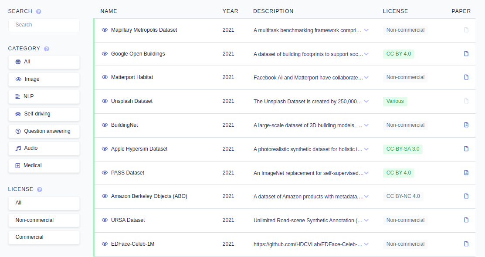

第 10 章 免费资料下载
10.1 Python
10.5 数据集
机器学习中最大的数据集资源列表，作者整理了一个机器学习数据集相关的列表集合，可用于机器学习实验。

这种资源可以减少你在线查找数据集的时间，该数据集根据不同的用途/领域划分，包括：CV、NLP、自动驾驶、QA、音频和医疗。你还能根据许可证类型进行划分。
10.6 R
BOOKDOWN官网（bookdown.org）上有不少人发布了自己的电子书，完全免费开源，
我筛选了5本感觉很不错的数据科学方面的书，打开图片下方链接即可阅读！
5本数据科学电子书
https://rafalab.github.io/dsbook/